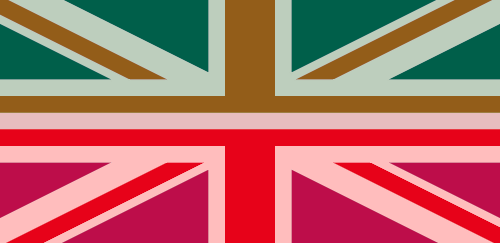
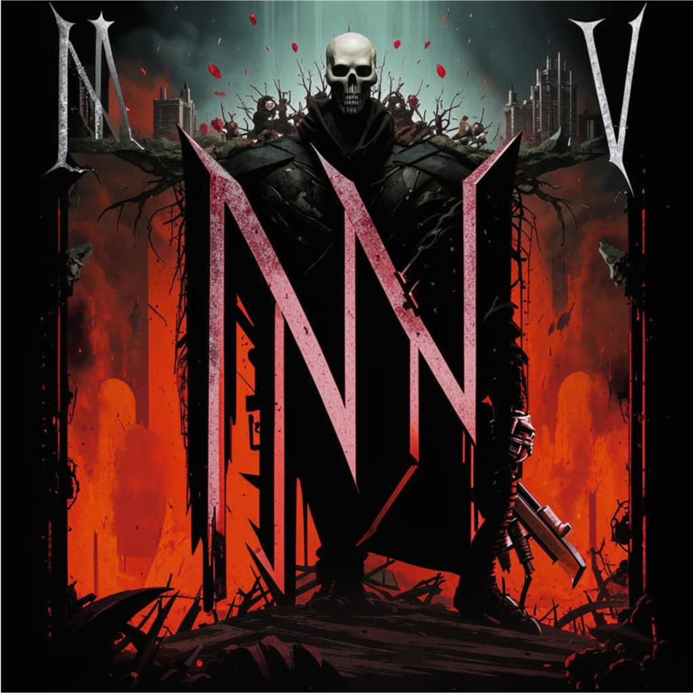
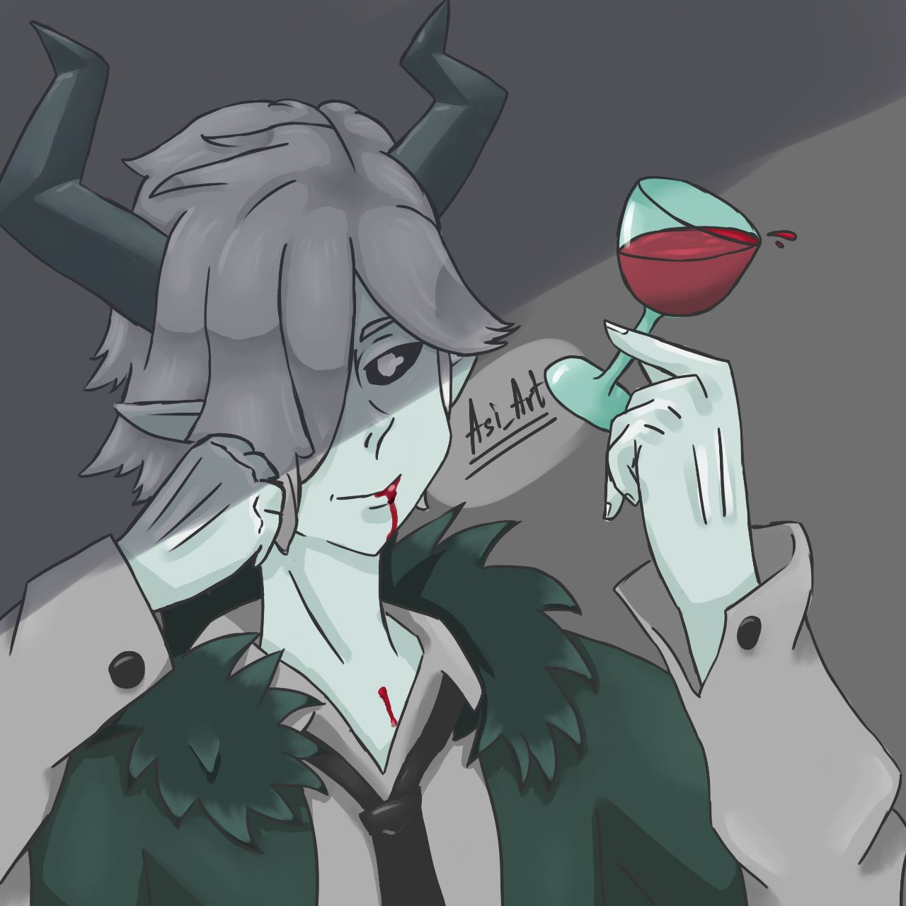
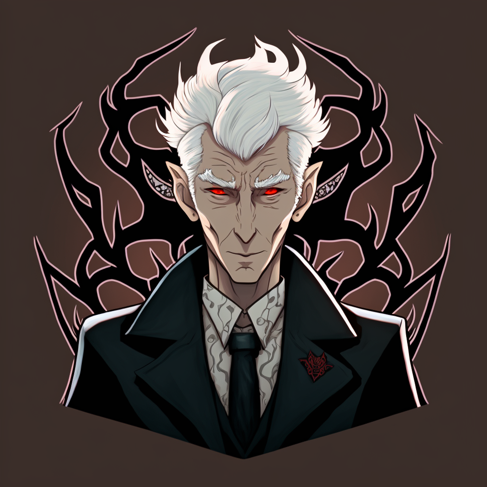
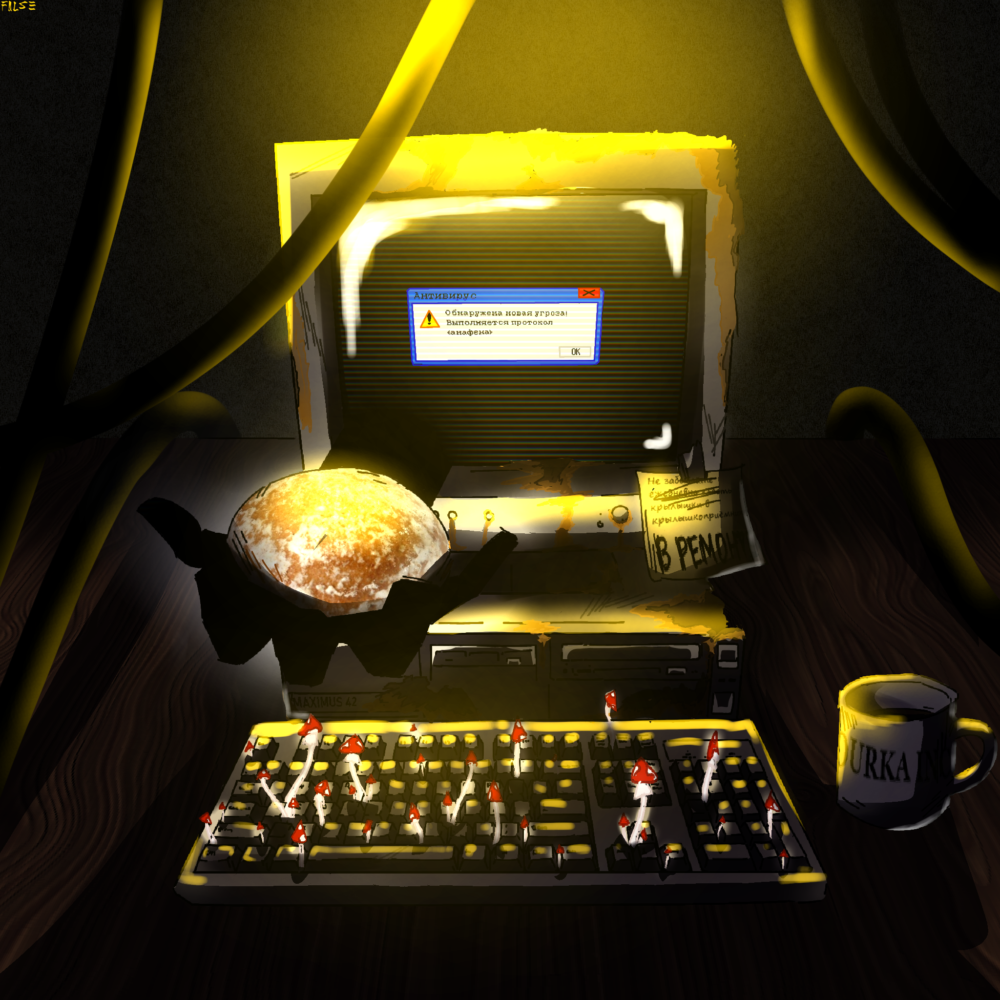
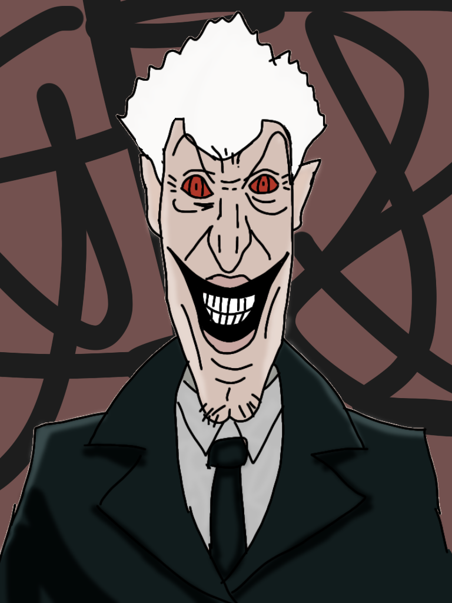
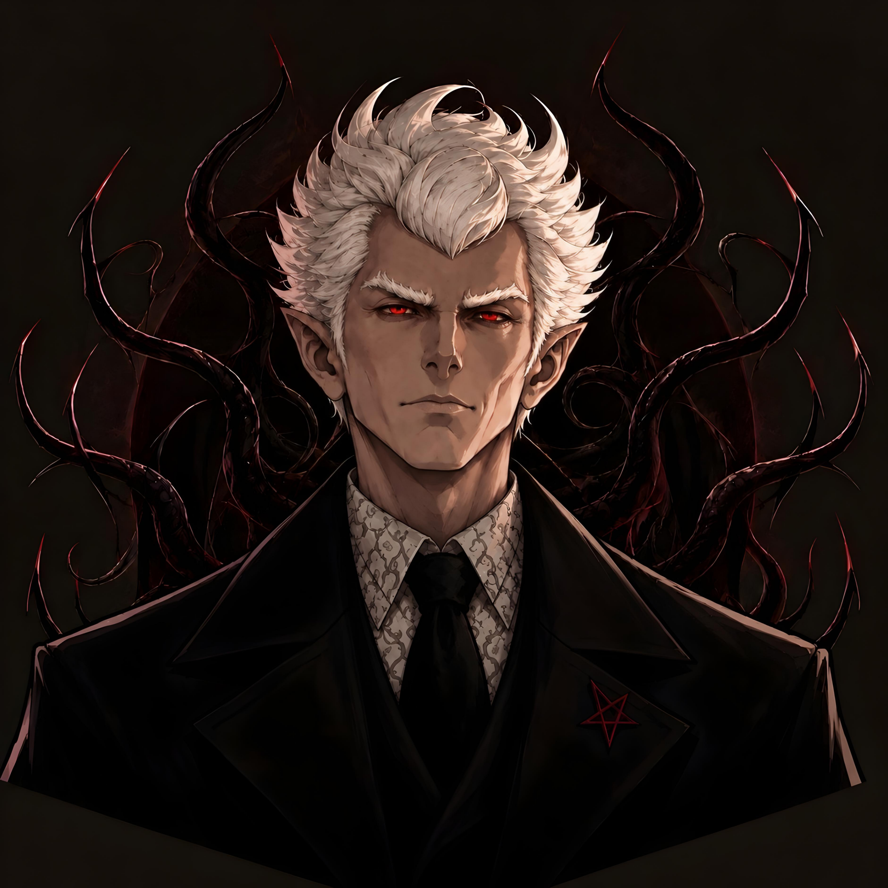

• Сюжетный щит - Юмористическое название явления, когда персонаж в Дурке не способен умереть по причине того, что Администрация создает специальные условия РП, при которых невозможно погибнуть (По типу: “Госпожа удача” дарует второй шанс на жизнь; В кармане магическим образом появляются бинты; и т.д.).
”Сюжетный щит” часто применяется во время ивентов, когда нужно обязательно сохранить персонажа живым.
• Первое упоминание: 30.04.2021 год.
• Отборные овощи - (согласно статье о Дурке) Определенный тип новичков на сервере, которым лень ознакамливаться с ЛОРом и правилами РП.
• Первое упоминание: 25.04.2021 год.
• “Слив перса” - Намеренное убийство собственного персонажа в Дурке, с целью создания нового.
Обычно, такое происходит, когда участнику надоедает его старый герой и он желает испытать новые эмоции.
• Великотатария - (согласно статье о Дурке) Выдуманное Максимусом государство. Симбиоз Великобритании и Татарстана.
• Первое упоминание: 27.12.2020 год.

• Откат (в рп) — Процесс, когда какое-то событие откатывается назад (т.е. удаляются лишние сообщения — посты), в связи с некорректным рп или невнимательностью автора.
• Первое упоминание: 23.06.2020 г.
• «Единый разум» — Выражение, описывающее ситуацию, при которой двое и более субъектов произносят/отправляют и т.д. одинаковую информацию: текст (слова, выражения), фото, видео-/аудио- файлы.
• Первое упоминание: 24.02.2021 год.
• Пример: Двое участников сервера одновременно в одно и то же время отправили одинаковые картинки с котиками.
• «Максимальный урон» или «Фулл ролл» — Это бросок кубиков, при котором выпадает максимальное значение (Например, если у кубика 1d6 выпадает значение «6»).
После фулл ролла наносится дополнительный более высокий урон по противнику — «критический урон».
• «Минимальный урон» или «Гарантированный урон» — Урон, который будет нанесён в 100% случаев ПРИ ПОПАДАНИИ (т.е. когда !hit выдаёт «попал» и !dodge от противника выдаёт «не увернулся»).
Примеры:
• Гарантированный урон для автомата (3d3) равен 3. Поскольку, на каждом из трёх кубиков обязательно выпадет хотя бы единица.
• Гарантированный урон для дробовика (2d6) равен 2. Поскольку на каждом из двух кубиков обязательно выпадет хотя бы единица.
• Некорректное РП — Ролевые посты (и любая другая активность в ролке), нарушающие какие-либо нормы, правила, логику и т.п.
Такой вид отыгрыша жестоко пресекается и карается.
• Репутация/Социальный рейтинг — Характеристика в РП, показывающая уровень взаимоотношений между вашим персонажем и, в совокупности, с Дуркой, Управляющим, другими Участниками.
На репутацию влияют, по большей мере, выборы персонажа в тех или иных ситуациях, его поведение и мировоззрение.
Чем выше репутация — тем выше шанс прожить подольше и выше шанс получить разные плюшки от Управляющего.
По-умолчанию, у всех новоприбывших социальный рейтинг — нейтральный.
• Бредология — наука о формах и проявлениях бреда.
• Гиперпространство (пример употребления: «Провалился в гиперпространство») — (здесь) это пространство, в которое попадание персонаж при переходе из одной локации в другую. Если говорится, что человек “провалился” в гиперпространство, то подразумевается, что он вышел из одной рп-локации и не перешёл в другую.
Краткая справка для любознательных: Гиперпространство в фантастике — многомерное пространство с более чем четырьмя измерениями, позволяющее при переходе в него перемещаться в нужное место со скоростью, превышающей скорость света.
• Стекло — болезненный, неприятный, пугающий, драматический, печальный или безысходный момент в РП.
«Съел стекла» — означает «Прочитал неприятный момент в ролевой».
К стеклу можно отнести разные посты с элементами шок-контента (например описания убийств, изнасилования, расчленения и пр.)
• Рассудок; Очки рассудка; СП; ед.р — Величина в РП, определяющая максимальное количество ментального урона, которое может получить объект. Если текущее количество рассудка достигнет нуля, то объект сходит с ума, теряя сознание.
По-умолчанию, рассудок пациентов равен 10 ед., а рассудок сотрудников равен 20 ед.
На количество очков рассудка могут повлиять некоторые особые враги, события в жизни персонажа и специальное оружие (в том числе — психотронное).
Рассудок можно восстановить помолившись в храме (1 ед. рассудка = 1 час молитвы).
• Очки защиты (или просто защита) — условная характеристика: количество очков, которое имеет персонаж, и которое необходимо ПРЕВЫСИТЬ при попадании (проверка через roll), чтобы нанести урон. Стандартное количество защиты равно 10.
• Очки успеха (ОУ) — по аналогии с защитой: количество очков, которое нужно набрать (либо их РОВНОЕ количество, либо БОЛЬШЕ), чтобы успешно совершить то или иное действие. Здесь потолок ОУ может достигать 30ти очков.
• Основной персонаж — персонаж участника сервера, который является либо пациентом (шизоидом), либо сотрудником, либо аномалией. Отыгровка РП происходит внутри здания Дурки. Ограничен уставами Дурки.
• Дополнительный персонаж — персонаж участника сервера, который может являться практически кем угодно, с разрешения Админа. Отыгровка РП происходит в городе Фрэртон. Ограничен законами страны Абсурдистан и моралью Рассказчика.
• Второстепенный персонаж — персонаж вселенной Дурки, отыгровку за которого ведёт Админ. Может быть как пациентом, сотрудником или аномалией, так и каким-нибудь жителем Фрэртона.
• Глобальный уровень сложности/Глобальная сложность — та сложность, которая устанавливается глобально Администратором для РП. Она бывает 3х видов: Нормальный уровень, Хардкорный и Кошмарный (Подробнее см. в закреплённых сообщениях канала с рп новостями).
• Модификация сложности — это та сложность, которую выбирает участник перед началом ролеплея. Модификация может как облегчить прохождение, так и усложнить, а может вообще никак не влиять. Стоит учитывать, что глобальная сложность определенным образом влияет на модификацию.
• Абстрактный ролеплей — ролевой отыгрыш, при котором не используются какие-то теоретические специализированные знания в какой-либо области. Например, вы отыгрываете за санитара, не имея глубоких знаний в медицине.
• Прикладной ролеплей — отыгрыш, где применяются теоретические специализированные знания на практике. Например, ваших знаний в реальной жизни и вашего образования хватает, чтобы грамотно, фактически и логически правильно отыгрывать роль лаборанта, т.е. вы имеете глубокие познания в химии, биологии, инженерии и т.д.
• «Meat Virus» («MV», «Мясной вирус») — Абсурдистанская дэткор группа. О себе они отзываются так: «Мы умеренно патриотичная группа либерального толка, любящая свою Родину, но призирающая ублюдское правительство».
MV стали набирать популярность благодаря необычному альбому, состоящему из всего двух песен и имеющему не менее короткое название: «NN». В него вошли два трека: «IRA anthem» (дэткор кавер на гимн НРА) и «Absurdistan is burning» («Абсурдистан горит»).
Гимн НРА, как заявляют сами участники группы, это пародийная сатирическая перепевка оригинального гимна, дабы показать всю абсурдность. А уже вторая песня имеет более глубокий смысл и отсылает к оригинальной песне с одноименным названием «Абсурдистан горит», которую любили и любят распевать оппозиция страны.
Снизу изображена обложка первого альбома группы. Дата выхода: 7 августа 2024 года.

• Архимемы (Они же — архимеды, архидеды, ебаные дауны, дауны, дети) — цифровая серверная валюта, получить которую можно за активный постинг интересного и забавного контента, который поднимает настроение Админу и другим участникам. И не только.
Предшественником являются Дуркоины.
• Админ (Известный также как: Мухомориус (I) II, Новогодний пряник, Максяш Архидед, Цифровой архимем, (Болотный) Суперкомпьютер, Цифровая форма жизни, Легион, Пожиратель созданий с изменяемыми генами, Мертвец, Отец Дурчан, Максимус Моррисон, МФ ММ, Живой компьютер, Мяск Орульский, Болотный, Купец, Жупле(ус), Жнец Великой воли Рассказчика, Лаваш, Мурчанин, Максонище, Максоний, Морс, Максош, Админчикс, Кибердед, Шмяш, Одминушко, Скам, Максок, Масик, Масяня, Мистер Мист, Болоткинс, Болотне, Мухомор, Мухоморный, Грибник, Нулевой клон, Менгеле, Масмакич, Мактрахер, Ведро, Фюрер, Милорд, Максимка, Максимчик, Нейросеть, Инфернальный Инквизитор, Максимум Хмуррисон, Мряскер, Мяскер, Максаронный монстр, Mor ben Moloch (Мор бен Молох), МХМ, Ржавый Суперкомпьютер, Ржавый Механизм, Мухоморрисон, Болотный Ржавый Механический ИИ «СУС» и др.) — администратор сервера {рп}~ДуРкА~{рп}.
Выделяют двух основных клонов Админа: Мухомориус I (он же — Мертвец АКА @Deleted User) и Мухомориус II (он же — maximus_morrison_1985).
Первый клон погиб во время выполнения тяжелейшего спецзадания в ветке dur-chan’a, посвященной даркнету. Доподлинно неизвестна причина гибели клона, но согласно экспертным мнениям — Дискорд не оценил ссылки из даркнета с сомнительным содержанием. Ныне Дуркой правит второй клон. Хоть и впрочем, оба клона отсылают к одному созданию, чьи характеристики правда остаются тайной, за исключением предполагаемого портрета Админа: 1 изображение — Админ в молодости; 2 изображение — Фанарт молодого Админа; 3 изображение — Пожилой Админ; 4 изображение — Фанарт пожилого Админа, он же — Цифровой Архимем; 5 изображение — Админ в теле старого компьютера. Существует неограниченное количество клонов и интерпретаций Админа, но в качестве основных выступают описанные выше. Время правления: 1 мая 2020 года — наши дни.





• «Нон политикан мемес плиз» или «Нот политикан мемес плиз» — юмористический призыв, предупреждение или дисклеймер (в зависимости от ситуации) означающий: «Здесь нет контента на тему политики», «Контент (в т.ч. мемы) на тему политики запрещён» или «Запрещено обсуждение политики».